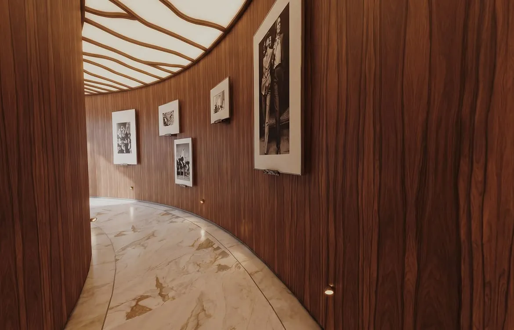
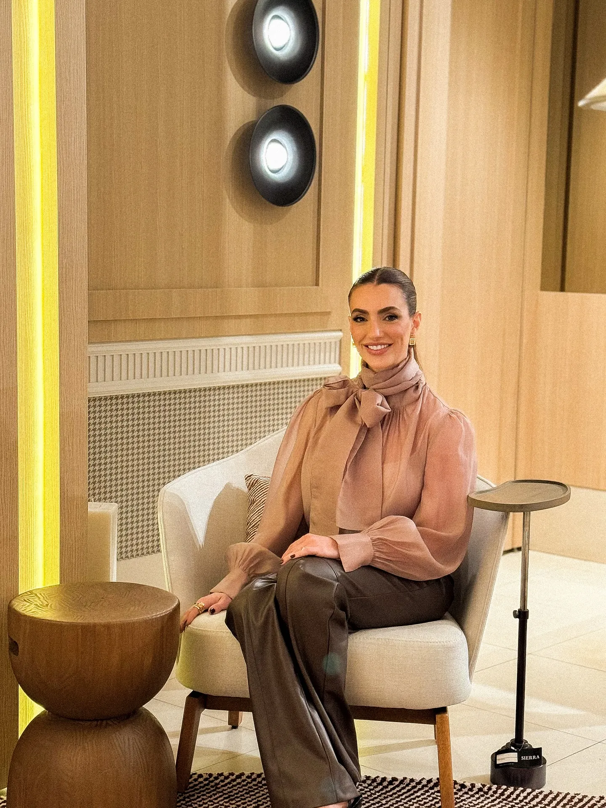

Escuta
Todo projeto começa pela rotina, pelos hábitos e pelos desejos de quem vai viver o espaço.
A arquiteta e a equipe
Arquitetura com alma, proximidade e elegância. É assim que Isadora resume o que busca em cada projeto.
Trajetória
Do escritório em Maringá saem projetos de arquitetura e interiores para diferentes cidades do Brasil e também de fora dele.
Entre eles está o Rosewood São Paulo, onde Isadora desenhou recepção, circulação e salas de atendimento em tempo recorde, com a madeira envolvendo o espaço do piso ao forro. Em qualquer escala, de um lavabo a uma casa inteira, o cuidado é o mesmo.
A identidade aparece nos detalhes: a paleta de terras queimadas, a mistura de estampas que parece improvável até virar harmonia e uma marcenaria que parece ter sempre feito parte do lugar.

Todo projeto começa pela rotina, pelos hábitos e pelos desejos de quem vai viver o espaço.
Isadora acompanha cada cliente de perto, do primeiro encontro à entrega do projeto.
Os detalhes são pensados para se revelar aos poucos, no uso de cada dia.
Arquitetura com alma, proximidade e elegância.

A equipe
Ao lado de Isadora, a equipe do escritório acompanha cada etapa, do estudo inicial ao detalhamento da marcenaria e às visitas de obra.
É essa proximidade que permite desenhar com precisão e entregar espaços que acolhem de verdade.
Falar com a equipe